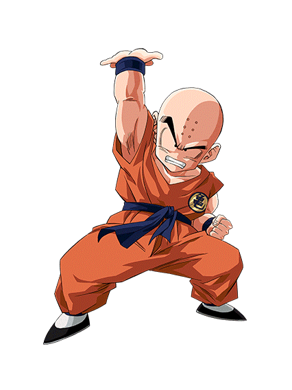
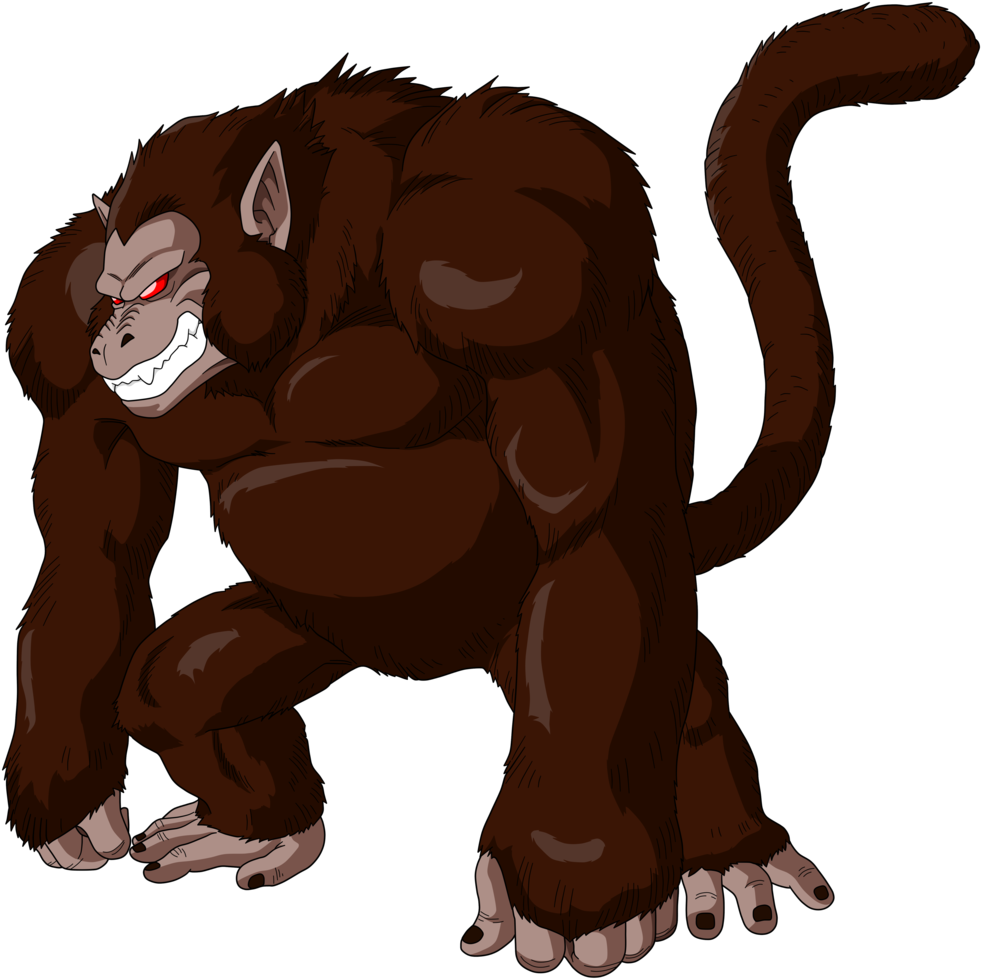

Física Aplicada • Dragon Ball Z
Experimento del Mono
Krillin apunta automáticamente al Ozaru. Al lanzar el Kienzan, el Ozaru cae al mismo tiempo. Como ambos tienen la misma aceleración gravitatoria, sus trayectorias se encuentran.

Krillin
OzaruKrillin / Lanzador
Ozaru / Objetivo en caída
Ángulo automático
0°
Gravedad
9.81 m/s²
Tiempo de impacto
0.00 s
Tiempo actual
0.00 s
Kienzan
x: 0.0 m | y: 0.0 m
Ozaru
x: 0.0 m | y: 0.0 m
Ajusta los parámetros. El ángulo se calcula automáticamente hacia la posición inicial del Ozaru.